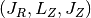
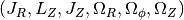
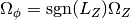
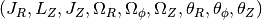
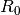
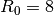
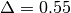

Action-angle coordinates
galpy can calculate actions and angles for a large variety of
potentials (any time-independent potential in principle). These are
implemented in a separate module galpy.actionAngle, and the
preferred method for accessing them is through the routines in this
module. There is also some support for accessing the actionAngle
routines as methods of the Orbit class.
Action-angle coordinates can be calculated for the following
potentials/approximations:
- Isochrone potential
- Spherical potentials
- Adiabatic approximation
- Staeckel approximation
- A general orbit-integration-based technique
There are classes corresponding to these different
potentials/approximations and actions, frequencies, and angles can
typically be calculated using these three methods:
- __call__: returns the actions
- actionsFreqs: returns the actions and the frequencies
- actionsFreqsAngles: returns the actions, frequencies, and angles
These are not all implemented for each of the cases above yet.
The adiabatic and Staeckel approximation have also been implemented in
C, for extremely fast action-angle calculations (see below).
Action-angle coordinates for the isochrone potential
The isochrone potential is the only potential for which all of the
actions, frequencies, and angles can be calculated analytically. We
can do this in galpy by doing
>>> from galpy.potential import IsochronePotential
>>> from galpy.actionAngle import actionAngleIsochrone
>>> ip= IsochronePotential(b=1.,normalize=1.)
>>> aAI= actionAngleIsochrone(ip=ip)
aAI is now an instance that can be used to calculate action-angle
variables for the specific isochrone potential ip. Calling this
instance returns 
>>> aAI(1.,0.1,1.1,0.1,0.) #inputs R,vR,vT,z,vz
(array([ 0.00713759]), array([ 1.1]), array([ 0.00553155]))
or for a more eccentric orbit
>>> aAI(1.,0.5,1.3,0.2,0.1)
(array([ 0.13769498]), array([ 1.3]), array([ 0.02574507]))
Note that we can also specify phi, but this is not necessary
>>> aAI(1.,0.5,1.3,0.2,0.1,0.)
(array([ 0.13769498]), array([ 1.3]), array([ 0.02574507]))
We can likewise calculate the frequencies as well
>>> aAI.actionsFreqs(1.,0.5,1.3,0.2,0.1,0.)
(array([ 0.13769498]),
array([ 1.3]),
array([ 0.02574507]),
array([ 1.29136096]),
array([ 0.79093738]),
array([ 0.79093738]))
The output is . For
any spherical potential, , such that the last two frequencies are the
same.
We obtain the angles as well by calling
>>> aAI.actionsFreqsAngles(1.,0.5,1.3,0.2,0.1,0.)
(array([ 0.13769498]),
array([ 1.3]),
array([ 0.02574507]),
array([ 1.29136096]),
array([ 0.79093738]),
array([ 0.79093738]),
array([ 0.57101518]),
array([ 5.96238847]),
array([ 1.24999949]))
The output here is
.
To check that these are good action-angle variables, we can calculate
them along an orbit
>>> from galpy.orbit import Orbit
>>> o= Orbit([1.,0.5,1.3,0.2,0.1,0.])
>>> ts= numpy.linspace(0.,100.,1001)
>>> o.integrate(ts,ip)
>>> jfa= aAI.actionsFreqsAngles(o.R(ts),o.vR(ts),o.vT(ts),o.z(ts),o.vz(ts),o.phi(ts))
which works because we can provide arrays for the R etc. inputs.
We can then check that the actions are constant over the orbit
>>> plot(ts,numpy.log10(numpy.fabs((jfa[0]-numpy.mean(jfa[0])))))
>>> plot(ts,numpy.log10(numpy.fabs((jfa[1]-numpy.mean(jfa[1])))))
>>> plot(ts,numpy.log10(numpy.fabs((jfa[2]-numpy.mean(jfa[2])))))
which gives

The actions are all conserved. The angles increase linearly with time
>>> plot(ts,jfa[6],'b.')
>>> plot(ts,jfa[7],'g.')
>>> plot(ts,jfa[8],'r.')

Action-angle coordinates for spherical potentials
Action-angle coordinates for any spherical potential can be calculated
using a few orbit integrations. These are implemented in galpy in the
actionAngleSpherical module. For example, we can do
>>> from galpy.potential import LogarithmicHaloPotential
>>> lp= LogarithmicHaloPotential(normalize=1.)
>>> from galpy.actionAngle import actionAngleSpherical
>>> aAS= actionAngleSpherical(pot=lp)
For the same eccentric orbit as above we find
>>> aAS(1.,0.5,1.3,0.2,0.1,0.)
(array([ 0.22022112]), array([ 1.3]), array([ 0.02574507]))
>>> aAS.actionsFreqs(1.,0.5,1.3,0.2,0.1,0.)
(array([ 0.22022112]),
array([ 1.3]),
array([ 0.02574507]),
array([ 0.87630459]),
array([ 0.60872881]),
array([ 0.60872881]))
>>> aAS.actionsFreqsAngles(1.,0.5,1.3,0.2,0.1,0.)
(array([ 0.22022112]),
array([ 1.3]),
array([ 0.02574507]),
array([ 0.87630459]),
array([ 0.60872881]),
array([ 0.60872881]),
array([ 0.40443857]),
array([ 5.85965048]),
array([ 1.1472615]))
We can again check that the actions are conserved along the orbit and
that the angles increase linearly with time:
>>> o.integrate(ts,lp)
>>> jfa= aAS.actionsFreqsAngles(o.R(ts),o.vR(ts),o.vT(ts),o.z(ts),o.vz(ts),o.phi(ts),fixed_quad=True)
where we use fixed_quad=True for a faster evaluation of the
required one-dimensional integrals using Gaussian quadrature. We then
plot the action fluctuations
>>> plot(ts,numpy.log10(numpy.fabs((jfa[0]-numpy.mean(jfa[0])))))
>>> plot(ts,numpy.log10(numpy.fabs((jfa[1]-numpy.mean(jfa[1])))))
>>> plot(ts,numpy.log10(numpy.fabs((jfa[2]-numpy.mean(jfa[2])))))
which gives

showing that the actions are all conserved. The angles again increase
linearly with time
>>> plot(ts,jfa[6],'b.')
>>> plot(ts,jfa[7],'g.')
>>> plot(ts,jfa[8],'r.')

We can check the spherical action-angle calculations against the
analytical calculations for the isochrone potential. Starting again
from the isochrone potential used in the previous section
>>> ip= IsochronePotential(b=1.,normalize=1.)
>>> aAI= actionAngleIsochrone(ip=ip)
>>> aAS= actionAngleSpherical(pot=ip)
we can compare the actions, frequencies, and angles computed using
both
>>> aAI.actionsFreqsAngles(1.,0.5,1.3,0.2,0.1,0.)
(array([ 0.13769498]),
array([ 1.3]),
array([ 0.02574507]),
array([ 1.29136096]),
array([ 0.79093738]),
array([ 0.79093738]),
array([ 0.57101518]),
array([ 5.96238847]),
array([ 1.24999949]))
>>> aAS.actionsFreqsAngles(1.,0.5,1.3,0.2,0.1,0.)
(array([ 0.13769498]),
array([ 1.3]),
array([ 0.02574507]),
array([ 1.29136096]),
array([ 0.79093738]),
array([ 0.79093738]),
array([ 0.57101518]),
array([ 5.96238838]),
array([ 1.2499994]))
or more explicitly comparing the two
>>> [r-s for r,s in zip(aAI.actionsFreqsAngles(1.,0.5,1.3,0.2,0.1,0.),aAS.actionsFreqsAngles(1.,0.5,1.3,0.2,0.1,0.))]
[array([ 6.66133815e-16]),
array([ 0.]),
array([ 0.]),
array([ -4.53851845e-10]),
array([ 4.74775219e-10]),
array([ 4.74775219e-10]),
array([ -1.65965242e-10]),
array([ 9.04759645e-08]),
array([ 9.04759649e-08])]
Action-angle coordinates using the adiabatic approximation
For non-spherical, axisymmetric potentials galpy contains multiple
methods for calculating approximate action–angle coordinates. The
simplest of those is the adiabatic approximation, which works well for
disk orbits that do not go too far from the plane, as it assumes that
the vertical motion is decoupled from that in the plane (e.g.,
2010MNRAS.401.2318B).
Setup is similar as for other actionAngle objects
>>> from galpy.potential import MWPotential
>>> from galpy.actionAngle import actionAngleAdiabatic
>>> aAA= actionAngleAdiabatic(pot=MWPotential)
and evaluation then proceeds similarly as before
>>> aAA(1.,0.1,1.1,0.,0.05)
(0.011551694768963469, 1.1, 0.00042376727426256727)
We can again check that the actions are conserved along the orbit
>>> from galpy.orbit import Orbit
>>> ts=numpy.linspace(0.,100.,1001)
>>> o= Orbit([1.,0.1,1.1,0.,0.05])
>>> o.integrate(ts,MWPotential)
>>> js= aAA(o.R(ts),o.vR(ts),o.vT(ts),o.z(ts),o.vz(ts))
This takes a while. The adiabatic approximation is also implemented in
C, which leads to great speed-ups. Here is how to use it
>>> timeit(aAA(1.,0.1,1.1,0.,0.05))
10 loops, best of 3: 48.7 ms per loop
>>> aAA= actionAngleAdiabatic(pot=MWPotential,c=True)
>>> timeit(aAA(1.,0.1,1.1,0.,0.05))
1000 loops, best of 3: 1.2 ms per loop
or about a 40 times speed-up. For arrays the speed-up is even more
impressive
>>> s= numpy.ones(100)
>>> timeit(aAA(1.*s,0.1*s,1.1*s,0.*s,0.05*s))
1000 loops, best of 3: 1.8 ms per loop
>>> aAA= actionAngleAdiabatic(pot=MWPotential) #back to no C
>>> timeit(aAA(1.*s,0.1*s,1.1*s,0.*s,0.05*s))
1 loops, best of 3: 4.94 s per loop
or a speed-up of 2700! Back to the previous example, you can run it
with c=True to speed up the computation
>>> aAA= actionAngleAdiabatic(pot=MWPotential,c=True)
>>> js= aAA(o.R(ts),o.vR(ts),o.vT(ts),o.z(ts),o.vz(ts))
We can plot the radial- and vertical-action fluctuation as a function
of time
>>> plot(ts,numpy.log10(numpy.fabs((js[0]-numpy.mean(js[0]))/numpy.mean(js[0]))))
>>> plot(ts,numpy.log10(numpy.fabs((js[2]-numpy.mean(js[2]))/numpy.mean(js[2]))))
which gives

The radial action is conserved to about half a percent, the vertical
action to two percent.
The adiabatic approximation works well for orbits that stay close to
the plane. The orbit we have been considering so far only reaches a
height two percent of , or about 150 pc for 
kpc.
>>> o.zmax()*8.
0.1561562486879895
For orbits that reach distances of a kpc and more from the plane, the
adiabatic approximation does not work as well. For example,
>>> o= Orbit([1.,0.1,1.1,0.,0.25])
>>> o.integrate(ts,MWPotential)
>>> o.zmax()*8.
1.1288142099238863
and we can again calculate the actions along the orbit
>>> js= aAA(o.R(ts),o.vR(ts),o.vT(ts),o.z(ts),o.vz(ts))
>>> plot(ts,numpy.log10(numpy.fabs((js[0]-numpy.mean(js[0]))/numpy.mean(js[0]))))
>>> plot(ts,numpy.log10(numpy.fabs((js[2]-numpy.mean(js[2]))/numpy.mean(js[2]))))
which gives

The radial action is now only conserved to about ten percent and the
vertical action to approximately five percent.
Warning
Frequencies and angles using the adiabatic approximation are not implemented at this time.
Action-angle coordinates using the Staeckel approximation
A better approximation than the adiabatic one is to locally
approximate the potential as a Staeckel potential, for which actions,
frequencies, and angles can be calculated through numerical
integration. galpy contains an implementation of the algorithm of
Binney (2012; 2012MNRAS.426.1324B), which
accomplishes the Staeckel approximation for disk-like (i.e., oblate)
potentials without explicitly fitting a Staeckel potential. For all
intents and purposes the adiabatic approximation is made obsolete by
this new method, which is as fast and more precise. The only advantage
of the adiabatic approximation over the Staeckel approximation is that
the Staeckel approximation requires the user to specify a focal
length  to be used in the Staeckel
approximation. However, this focal length can be easily estimated from
the second derivatives of the potential (see Sanders 2012;
2012MNRAS.426..128S).
to be used in the Staeckel
approximation. However, this focal length can be easily estimated from
the second derivatives of the potential (see Sanders 2012;
2012MNRAS.426..128S).
Starting from the second orbit example in the adiabatic section above,
we first estimate a good focal length of the MWPotential to use in
the Staeckel approximation. We do this by averaging (through the
median) estimates at positions around the orbit (which we integrated
in the example above)
>>> from galpy.actionAngle import estimateDeltaStaeckel
>>> estimateDeltaStaeckel(o.R(ts),o.z(ts),pot=MWPotential)
0.54421090762027347
We will use  in what follows. We set up the
actionAngleStaeckel object
>>> aAS= actionAngleStaeckel(pot=MWPotential,delta=0.55,c=False) #c=True is the default
and calculate the actions
>>> aAS(o.R(),o.vR(),o.vT(),o.z(),o.vz())
(0.015760720988339319, 1.1000000000000001, 0.013466290557851267)
The adiabatic approximation from above gives
>>> aAA(o.R(),o.vR(),o.vT(),o.z(),o.vz())
(0.0138915441284973, 1.1000000000000001, 0.01383357354294852)
The actionAngleStaeckel calculations are sped up in two ways. First,
the action integrals can be calculated using Gaussian quadrature by
specifying fixed_quad=True
>>> aAS(o.R(),o.vR(),o.vT(),o.z(),o.vz(),fixed_quad=True)
(0.015767954890517084, 1.1000000000000001, 0.013468235165983522)
which in itself leads to a ten times speed up
>>> timeit(aAS(o.R(),o.vR(),o.vT(),o.z(),o.vz(),fixed_quad=False))
10 loops, best of 3: 43.9 ms per loop
>>> timeit(aAS(o.R(),o.vR(),o.vT(),o.z(),o.vz(),fixed_quad=True))
100 loops, best of 3: 3.87 ms per loop
Second, the actionAngleStaeckel calculations have also been
implemented in C, which leads to even greater speed-ups, especially
for arrays
>>> aAS= actionAngleStaeckel(pot=MWPotential,delta=0.55,c=True)
>>> s= numpy.ones(100)
>>> timeit(aAS(1.*s,0.1*s,1.1*s,0.*s,0.05*s))
100 loops, best of 3: 2.37 ms per loop
>>> aAS= actionAngleStaeckel(pot=MWPotential,delta=0.55,c=False) #back to no C
>>> timeit(aAS(1.*s,0.1*s,1.1*s,0.*s,0.05*s,fixed_quad=True))
1 loops, best of 3: 410 ms per loop
or a two hundred times speed up.
We can now go back to checking that the actions are conserved along
the orbit
>>> js= aAS(o.R(ts),o.vR(ts),o.vT(ts),o.z(ts),o.vz(ts),fixed_quad=True)
>>> plot(ts,numpy.log10(numpy.fabs((js[0]-numpy.mean(js[0]))/numpy.mean(js[0]))))
>>> plot(ts,numpy.log10(numpy.fabs((js[2]-numpy.mean(js[2]))/numpy.mean(js[2]))))
which gives

The radial action is now conserved to better than a percent and the
vertical action to only a fraction of a percent. Clearly, this is much
better than the five to ten percent errors found for the adiabatic
approximation above.
For the Staeckel approximation we can also calculate frequencies and
angles through the actionsFreqs and actionsFreqsAngles
methods.
Warning
Frequencies and angles using the Staeckel approximation
are only implemented in C. So use c=True in the setup of the
actionAngleStaeckel object.
>>> aAS= actionAngleStaeckel(pot=MWPotential,delta=0.55,c=True)
>>> o= Orbit([1.,0.1,1.1,0.,0.25,0.]) #need to specify phi for angles
>>> aAS.actionsFreqsAngles(o.R(),o.vR(),o.vT(),o.z(),o.vz(),o.phi())
(array([ 0.01576795]),
array([ 1.1]),
array([ 0.01346824]),
array([ 1.22171491]),
array([ 0.85773142]),
array([ 1.60476805]),
array([ 0.41881231]),
array([ 6.18908605]),
array([ 4.57359281]))
and we can check that the angles increase linearly along the orbit
>>> o.integrate(ts,MWPotential)
>>> jfa= aAS.actionsFreqsAngles(o.R(ts),o.vR(ts),o.vT(ts),o.z(ts),o.vz(ts),o.phi(ts))
>>> plot(ts,jfa[6],'b.')
>>> plot(ts,jfa[7],'g.')
>>> plot(ts,jfa[8],'r.')

or
>>> plot(jfa[6],jfa[8],'b.')

Action-angle coordinates using an orbit-integration-based approximation
The adiabatic and Staeckel approximations used above are good for
stars on close-to-circular orbits, but they break down for more
eccentric orbits (specifically, orbits for which the radial and/or
vertical action is of a similar magnitude as the angular
momentum). This is because the approximations made to the potential in
these methods (that it is separable in R and z for the adiabatic
approximation and that it is close to a Staeckel potential for the
Staeckel approximation) break down for such orbits. Unfortunately,
these methods cannot be refined to provide better approximations for
eccentric orbits.
galpy contains a new method for calculating actions, frequencies, and
angles that is completely general for any static potential. It can
calculate the actions to any desired precision for any orbit in such
potentials. The method works by employing an auxiliary isochrone
potential and calculates action-angle variables by arithmetic
operations on the actions and angles calculated in the auxiliary
potential along an orbit (integrated in the true potential). Full
details can be found in Appendix A of Bovy (2014).
We setup this method for a logarithmic potential as follows
>>> from galpy.actionAngle import actionAngleIsochroneApprox
>>> from galpy.potential import LogarithmicHaloPotential
>>> lp= LogarithmicHaloPotential(normalize=1.,q=0.9)
>>> aAIA= actionAngleIsochroneApprox(pot=lp,b=0.8)
b=0.8 here sets the scale parameter of the auxiliary isochrone
potential; this potential can also be specified as an
IsochronePotential instance through ip=). We can now calculate the
actions for an orbit similar to that of the GD-1 stream
>>> obs= numpy.array([1.56148083,0.35081535,-1.15481504,0.88719443,-0.47713334,0.12019596]) #orbit similar to GD-1
>>> aAIA(*obs)
(array([ 0.16605011]), array([-1.80322155]), array([ 0.50704439]))
An essential requirement of this method is that the angles calculated
in the auxiliary potential go through the full range
![[0,2\pi]](_images/math/166f2f81461a7a6ce563dbb02f64f78f6bd08acc.png) . If this is not the case, galpy will raise a warning
. If this is not the case, galpy will raise a warning
>>> aAIA= actionAngleIsochroneApprox(pot=lp,b=10.8)
>>> aAIA(*obs)
galpyWarning: Full radial angle range not covered for at least one object; actions are likely not reliable
(array([ 0.08985167]), array([-1.80322155]), array([ 0.50849276]))
Therefore, some care should be taken to choosing a good auxiliary
potential. galpy contains a method to estimate a decent scale
parameter for the auxiliary scale parameter, which works similar to
estimateDeltaStaeckel above except that it also gives a minimum
and maximum b if multiple R and z are given
>>> from galpy.actionAngle import estimateBIsochrone
>>> from galpy.orbit import Orbit
>>> o= Orbit(obs)
>>> ts= numpy.linspace(0.,100.,1001)
>>> o.integrate(ts,lp)
>>> estimateBIsochrone(o.R(ts),o.z(ts),pot=lp)
(0.78065062339131952, 1.2265541473461612, 1.4899326335155412) #bmin,bmedian,bmax over the orbit
Experience shows that a scale parameter somewhere in the range
returned by this function makes sure that the angles go through the
full range. However, even if the angles go through
the full range, the closer the angles increase to linear, the better
the converenge of the algorithm is (and especially, the more accurate
the calculation of the frequencies and angles is, see below). For
example, for the scale parameter at the upper and of the range
>>> aAIA= actionAngleIsochroneApprox(pot=lp,b=1.5)
>>> aAIA(*obs)
(array([ 0.01120145]), array([-1.80322155]), array([ 0.50788893]))
which does not agree with the previous calculation. We can inspect how
the angles increase and how the actions converge by using the
aAIA.plot function. For example, we can plot the radial versus the
vertical angle in the auxiliary potential
>>> aAIA.plot(*obs,type='araz')
which gives

and this clearly shows that the angles increase very non-linearly,
because the auxiliary isochrone potential used is too far from the
real potential. This causes the actions to converge only very
slowly. For example, for the radial action we can plot the converge as a function of integration time
>>> aAIA.plot(*obs,type='jr')
which gives

This Figure clearly shows that the radial action has not converged
yet. We need to integrate much longer in this auxiliary potential to
obtain convergence and because the angles increase so non-linearly, we also need to integrate the orbit much more finely:
>>> aAIA= actionAngleIsochroneApprox(pot=lp,b=1.5,tintJ=1000,ntintJ=800000)
>>> aAIA(*obs)
(array([ 0.01711635]), array([-1.80322155]), array([ 0.51008058]))
>>> aAIA.plot(*obs,type='jr')
which shows slow convergence

Finding a better auxiliary potential makes convergence much faster
and also allows the frequencies and the angles to be calculated by
removing the small wiggles in the auxiliary angles vs. time (in the
angle plot above, the wiggles are much larger, such that removing them
is hard). The auxiliary potential used above had b=0.8, which
shows very quick converenge and good behavior of the angles
>>> aAIA= actionAngleIsochroneApprox(pot=lp,b=0.8)
>>> aAIA.plot(*obs,type='jr')
gives

and
>>> aAIA.plot(*obs,type='araz')
gives

We can remove the periodic behavior from the angles, which clearly
shows that they increase close-to-linear with time
>>> aAIA.plot(*obs,type='araz',deperiod=True)

We can then calculate the frequencies and the angles for this orbit as
>>> aAIA.actionsFreqsAngles(*obs)
(array([ 0.16392384]),
array([-1.80322155]),
array([ 0.50999882]),
array([ 0.55808933]),
array([-0.38475753]),
array([ 0.42199713]),
array([ 0.18739688]),
array([ 0.3131815]),
array([ 2.18425661]))
This function takes as an argument maxn= the maximum n for which
to remove sinusoidal wiggles. So we can raise this, for example to 4
from 3
>>> aAIA.actionsFreqsAngles(*obs,maxn=4)
(array([ 0.16392384]),
array([-1.80322155]),
array([ 0.50999882]),
array([ 0.55808776]),
array([-0.38475733]),
array([ 0.4219968]),
array([ 0.18732009]),
array([ 0.31318534]),
array([ 2.18421296]))
Clearly, there is very little change, as most of the wiggles are of
low n.
Warning
While the orbit-based actionAngle technique in principle works for triaxial potentials, angles and frequencies for non-axisymmetric potentials are not implemented yet.
This technique also works for triaxial potentials, but using those
requires the code to also use the azimuthal angle variable in the
auxiliary potential (this is unnecessary in axisymmetric potentials as
the z component of the angular momentum is conserved). We can
calculate actions for triaxial potentials by specifying that
nonaxi=True:
>>> aAIA(*obs,nonaxi=True)
(array([ 0.16605011]), array([-1.80322155]), array([ 0.50704439]))
galpy currently does not contain any triaxial potentials, so we cannot
illustrate this here with any real triaxial potentials.
Accessing action-angle coordinates for Orbit instances
While the recommended way to access the actionAngle routines is
through the methods in the galpy.actionAngle modules, action-angle
coordinates can also be cacluated for galpy.orbit.Orbit
instances. This is illustrated here briefly. We initialize an Orbit
instance
>>> from galpy.orbit import Orbit
>>> from galpy.potential import MWPotential
>>> o= Orbit([1.,0.1,1.1,0.,0.25,0.])
and we can then calculate the actions (default is to use the adiabatic
approximation)
>>> o.jr(MWPotential), o.jp(MWPotential), o.jz(MWPotential)
(0.0138915441284973, 1.1, 0.01383357354294852)
o.jp here gives the azimuthal action (which is the z component
of the angular momentum for axisymmetric potentials). We can also use
the other methods described above, but note that these require extra
parameters related to the approximation to be specified (see above):
>>> o.jr(MWPotential,type='staeckel',delta=0.55), o.jp(MWPotential,type='staeckel',delta=0.55), o.jz(MWPotential,type='staeckel',delta=0.55)
(array([ 0.01576795]), array([ 1.1]), array([ 0.01346824]))
>>> o.jr(MWPotential,type='isochroneApprox',b=0.8), o.jp(MWPotential,type='isochroneApprox',b=0.8), o.jz(MWPotential,type='isochroneApprox',b=0.8)
(array([ 0.0155484]), array([ 1.1]), array([ 0.01350128]))
These two methods give very precise actions for this orbit (both are
converged to about 1%) and they agree very well
>>> (o.jr(MWPotential,type='staeckel',delta=0.55)-o.jr(MWPotential,type='isochroneApprox',b=0.8))/o.jr(MWPotential,type='isochroneApprox',b=0.8)
array([ 0.01412076])
>>> (o.jz(MWPotential,type='staeckel',delta=0.55)-o.jz(MWPotential,type='isochroneApprox',b=0.8))/o.jz(MWPotential,type='isochroneApprox',b=0.8)
array([-0.00244754])
Warning
Once an action, frequency, or angle is calculated for a given type of calculation (e.g., staeckel), the parameters for that type are fixed in the Orbit instance. Call o.resetaA() to reset the action-angle instance used when using different parameters (i.e., different delta= for staeckel or different b= for isochroneApprox.
We can also calculate the frequencies and the angles. This requires
using the Staeckel or Isochrone approximations, because frequencies
and angles are currently not supported for the adiabatic
approximation. For example, the radial frequency
>>> o.Or(MWPotential,type='staeckel',delta=0.55)
1.2217149111363643
>>> o.Or(MWPotential,type='isochroneApprox',b=0.8)
1.222457055706389
and the radial angle
>>> o.wr(MWPotential,type='staeckel',delta=0.55)
0.4188123062144965
>>> o.wr(MWPotential,type='isochroneApprox',b=0.8)
0.42281897179881867
which again agree to 1%. We can also calculate the other frequencies,
angles, as well as periods using the functions o.Op, o.oz,
o.wp, o.wz, o.Tr, o.Tp, o.Tz.
Example: Evidence for a Lindblad resonance in the Solar neighborhood
We can use galpy to calculate action-angle coordinates for a set of
stars in the Solar neighborhood and look for unexplained features. For
this we download the data from the Geneva-Copenhagen Survey
(2009A&A...501..941H; data available
at viZier). Since
the velocities in this catalog are given as U,V, and W, we use the
radec and UVW keywords to initialize the orbits from the raw
data. For each object ii
>>> o= Orbit(vxvv[ii,:],radec=True,uvw=True,vo=220.,ro=8.)
We then calculate the actions and angles for each object in a flat
rotation curve potential
>>> lp= LogarithmicHaloPotential(normalize=1.)
>>> myjr[ii]= o.jr(lp)
etc.
Plotting the radial action versus the angular momentum
>>> plot.bovy_plot(myjp,myjr,'k.',ms=2.,xlabel=r'$J_{\phi}$',ylabel=r'$J_R$',xrange=[0.7,1.3],yrange=[0.,0.05])
shows a feature in the distribution

If instead we use a power-law rotation curve with power-law index 1
>>> pp= PowerSphericalPotential(normalize=1.,alpha=-2.)
>>> myjr[ii]= o.jr(pp)
We find that the distribution is stretched, but the feature remains

Code for this example can be found here (note that this code uses a particular
download of the GCS data set; if you use your own version, you will
need to modify the part of the code that reads the data). For more
information see 2010MNRAS.409..145S.